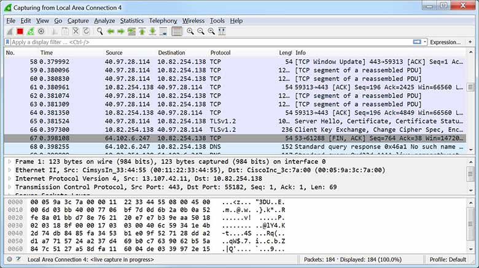

15.2.1 Herramientas de monitoreo de seguridad de la red
Algunas herramientas comunes que son utilizadas para el monitoreo de seguridad de la red son:
Es común que los analistas de seguridad utilicen archivos de registro y el Protocolo Simple de Administración de Red (SNMP, siglas en inglés) para detectar el comportamiento normal de la red.
Prácticamente todos los sistemas generan archivos de registro para comunicar y registrar sus operaciones. Al monitorear en detalle los archivos de registro, un analista de seguridad puede recopilar información muy valiosa.
SNMP permite a los analistas solicitar y recibir información acerca del funcionamiento de dispositivos de red. Es otra buena herramienta para monitorear el comportamiento de una red.
Los analistas de seguridad deben estar familiarizados con todas estas herramientas.
Herramientas comunes de monitoreo de seguridad de la red

15.2.2 Analizadores de protocolo de red
Los analizadores de protocolo de red (packet sniffer) son programas utilizados para capturar tráfico. Los analizadores de protocolo muestran lo que está sucediendo en la red a través de una interfaz gráfica de usuario. Los analistas pueden utilizar estas aplicaciones para ver intercambios de red hasta el nivel de paquetes. Si una computadora se infectó con malware y actualmente está atacando a otras computadoras en la red, el analista puede ver esta situación claramente gracias a la captura de tráfico de red en tiempo real y el análisis de los paquetes.
Los analizadores de protocolo de red no solo se utilizan para el análisis de seguridad. También son útiles para la solución de problemas, desarrollo de software y protocolos, y capacitación del personal. Por ejemplo, en informática forense de seguridad, un analista de seguridad puede intentar reconstruir un incidente a partir de capturas de paquetes relevantes.
Wireshark, el cual se muestra en la imagen, se ha convertido en una herramienta de análisis de protocolo de red muy popular que es utilizada en entornos Windows, Linux y macOS. Wireshark es un software libre que puede ser descargado y utilizado por cualquier persona. Es una herramienta muy útil para aprender acerca de las comunicaciones de protocolos de red. Las habilidades del uso de analizadores de protocolos de red son esenciales para los analistas de ciberseguridad.

Las tramas capturadas por Wireshark se guardan en un archivo PCAP. Los archivos PCAP contienen información sobre la trama, información sobre la interfaz, longitud del paquete, marcas de tiempo, e inclusive archivos binarios enteros que han sido enviados a través de la red.
La captura de paquetes a largo plazo produce archivos PCAP de gran tamaño.
Wireshark también puede abrir archivos que contengan tráfico capturado desde otro software, como tcpdump. Popular entre los sistemas tipo UNIX (como Linux), tcpdump es una utilidad muy completa con numerosas opciones de línea de comandos. En la pantalla de comandos de la imagen, se muestra un ejemplo de una captura de paquetes tcpdump de ping
[root@secOps analyst]# tcpdump -i hl-eth0 -n
tcpdump: verbose output suppressed, use -v or -vv for full protocol decode
listening on hl-eth0, link-type EN10MB (Ethernet), capture size 262144 bytes
10:42:19.841549 IP 10.0.0.12 > 10.0.0.11: ICMP echo request, id 2279, seq 5, length 64
10:42:19.841570 IP 10.0.0.11 > 10.0.0.12: ICMP echo reply, id 2279, seq 5, length 64
10:42:19.854287 IP 10.0.0.12 > 10.0.0.11: ICMP echo request, id 2279, seq 6, length 64
10:42:19.854304 IP 10.0.0.11 > 10.0.0.12: ICMP echo reply, id 2279, seq 6, length 64
10:42:19.867446 IP 10.0.0.12 > 10.0.0.11: ICMP echo request, id 2279, seq 7, length 64
10:42:19.867468 IP 10.0.0.11 > 10.0.0.12: ICMP echo reply, id 2279, seq 7, length 64
^C
6 packets captured
6 packets received by filter
0 packets dropped by kernel
[root@secOps analyst]#
Nota: windump es una variante de Windows de tcpdump, tshark es una herramienta de línea de comandos de Wireshark, que es similar a tcpdump.
15.2.3 NetFlow
NetFlow es una tecnología de Cisco IOS que proporciona estadísticas 24/7 sobre los paquetes que atraviesan un router o switch multicapa de Cisco. NetFlow es el estándar para recopilar datos operacionales de IP en redes IP. Actualmente, NetFlow es compatible con plataformas que no son de Cisco. IP Flow Information Export (IPFIX) es una versión de NetFlow que es un protocolo estándar del IETF.
NetFlow puede utilizarse para el monitoreo de red y de seguridad, la planificación de redes y el análisis de tráfico. Ofrece un registro de revisión completo de la información básica de todo el flujo de IP reenviado en un dispositivo. Estos datos incluyen la información de IP del dispositivo de origen y de destino, la hora de la comunicación y la cantidad de datos transferidos. NetFlow no captura el contenido actual del flujo. La funcionalidad de NetFlow suele compararse con una factura telefónica. En la factura, se identifica el número de destino, la hora y la duración de la llamada. Sin embargo, no se ve el contenido de la conversación telefónica.
Aunque NetFlow almacena la información en la caché local del dispositivo, siempre debe de ser configurado para reenviar los datos a un recopilador de NetFlow. Hay una serie de herramientas de terceros para el análisis de datos de NetFlow.
Por ejemplo, en la figura, la PC 1 se conecta a la PC 2 mediante una aplicación, como HTTPS.
NetFlow en la red

NetFlow puede monitorear la conexión de esa aplicación mediante el seguimiento de bytes y conteo de paquetes para el flujo de la aplicación. Entonces envía las estadísticas a un servidor externo denominado “recopilador NetFlow”.
Por ejemplo, Cisco Stealthwatch recolecta las estadísticas de NetFlow para realizar funciones avanzadas que incluyen:
Hay un canal Cisco Stealthwatch en YouTube que proporciona muchos detalles sobre Stealthwatch y sus usos.
15.2.4 SIEM y SOAR
Los analistas de seguridad de red pueden evaluar de manera rápida y precisa la importancia de cualquier evento de seguridad y responder las siguientes preguntas críticas:
Para ayudar a responder a estas preguntas, los analistas de seguridad utilizan:
SIEM
Gestión de eventos e información de seguridad (SIEM) es una tecnología utilizada en las organizaciones empresariales para proporcionar informes en tiempo real y análisis a largo plazo de eventos de seguridad.
Los dispositivos de red, incluidos firewall, IPS, ESA, WSA, routers, switches, servidores y hosts, están configurados para enviar registros (logs) de eventos al software SIEM. El software SIEM correlaciona los millones de eventos, utilizando machine learning y software de análisis especial para identificar el tráfico que debe ser investigado.
El sistema SIEM incluye las siguientes funciones esenciales:
Análisis de informática forense: Permite realizar búsquedas de logs y de registros de eventos generados en múltiples fuentes en toda la organización. Proporciona información más completa para el análisis de informática forense.
Correlación: Examina registros y eventos de diferentes sistemas o aplicaciones, lo que acelera la detección de las amenazas de seguridad y la capacidad de reacción ante ellas.
Agregación: Esta función reduce el volumen de los datos de eventos mediante la consolidación de registros de eventos duplicados.
Informes: Permiten ver los datos sobre eventos correlacionados y acumulados mediante monitoreo en tiempo real y resúmenes a largo plazo.
SIEM brinda detalles sobre el origen de actividad sospechosa:
SOAR
Orquestación, automatización y respuesta de seguridad (SOAR), mejora a SIEM. Ayuda a los equipos de seguridad a investigar incidentes de seguridad y añade una recopilación de datos mejorada y una serie de funcionalidades que ayudan en la respuesta a incidentes de seguridad.
Soluciones proporcionadas por SOAR:
Proporciona herramientas de gestión de casos que permiten al personal de ciberseguridad estudiar e investigar incidentes, integrando frecuentemente inteligencia de amenazas (threat intelligence) en la plataforma de seguridad de la red.
Utiliza la inteligencia artificial para detectar incidentes y ayudar en el análisis y la respuesta de incidentes.
Automatiza investigaciones y procedimientos de respuesta a incidentes complejos, que son tareas potencialmente intensas laboralmente, realizadas por el personal de un "security operations center" (SOC) mediante la ejecución de run books. Estos son "Playbooks" que realizan acciones como acceder y analizar datos relevantes, tomar medidas para aislar sistemas comprometidos y estudiar amenazas para validar alertas y ejecutar una respuesta a incidentes.
Ofrece Paneles e informes para documentar la respuesta a incidentes con el fin de mejorar los indicadores clave de rendimiento del SOC y puede mejorar en gran medida la seguridad de red de las organizaciones.
SIEM ayuda activando la alarma por actividad maliciosa. Los analistas tendrán que actuar ante la amenaza. SOAR ayuda a los analistas a responder a la amenaza.
15.2.5 Sistemas SIEM
Existen varios sistemas SIEM. "SolarWinds Security Event Manager" y "Splunk Enterprise Security" son dos de los sistemas SIEM patentados más populares utilizados por los SOC. Para conocer más sobre estos productos, realizar una búsqueda en internet.
En este curso, utilizaremos un producto de código abierto llamado Security Onion que incluye el conjunto ELK para la funcionalidad SIEM. ELK es el acrónimo correspondiente para tres productos de Elastic:
Elasticsearch: Motor de búsqueda fulltext orientado a documentos.
Logstash: Sistema de procesamiento de flujo que conecta "entradas" a "salidas" con "filtros" opcionales en el medio
Kibana: Dashboard en el navegador que proporciona vistas analíticas de datos y de búsqueda para Elasticsearch.
Para conocer más sobre Elastic.co y su lista de productos, realizar una búsqueda en internet.
15.2.6 Verifique su comprensión - Identifique los tipos de herramientas de monitoreo de red
15.2.7 Packet Tracer - Registrar la actividad de la red
En esta actividad, se deberán interceptar credenciales mediante un dispositivo sniffer, mientras se observa una sesión de FTP. El dispositivo sniffer también interceptará un intercambio de mensajes "Syslog".